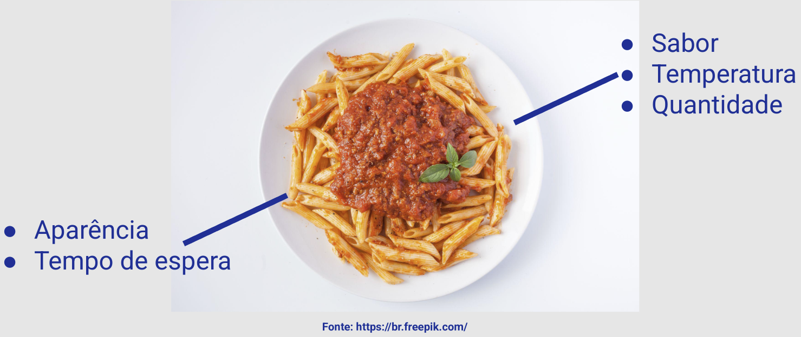
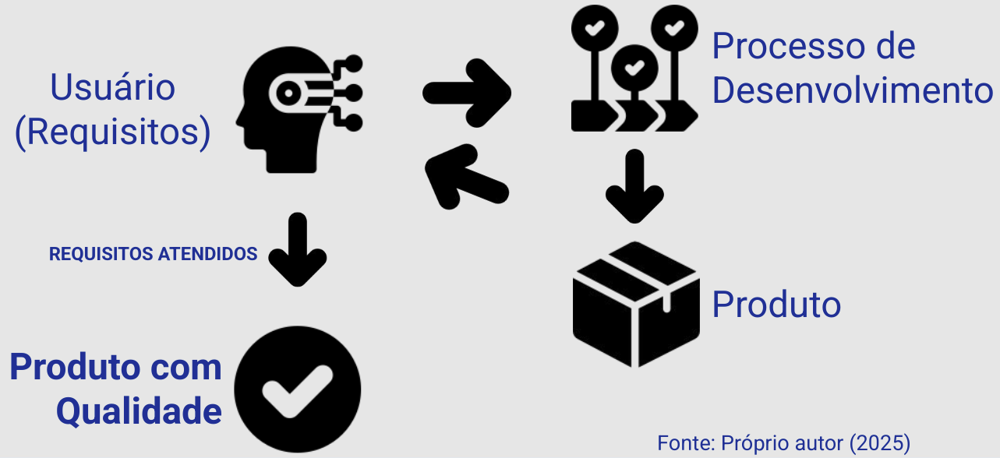
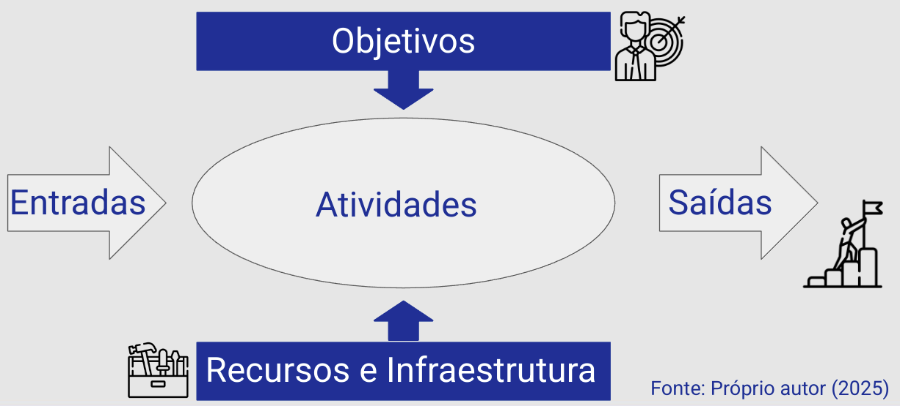

Disciplinas
VERIFICAÇÃO, VALIDAÇÃO E TESTE DE SOFTWARE. Concluído
Materiais
[UFMS Digital] VERIFICAÇÃO, VALIDAÇÃO E TESTE DE SOFTWARE - Módulo 1 - Unidade 1
Prof° ministrante: Leonardo Souza Silva.
Qualidade.
- Preocupação com Qualidade é algo presente na sociedade;
- Pode trazer impactos negativos:
- Empresas (custos, má reputação);
- Clientes (perda de negócios, prejuízos);
- Qual a diferença entre Qualidade e Qualidade de Software?

...
E a definição?
“Qualidade é algo que se
reconhece imediatamente,
mas não se consegue
definir explicitamente.”
(David Garvin)
O que já sabemos
- Definir qualidade para um produto físico é mais fácil;
- Características inerentes ao produto;
- Conformidade com a especificação (manufatura);
- Controle da Qualidade
- Conformidade com os requisitos;
- Explícitos e Implícitos.
A totalidade das
características de uma
entidade que lhe confere a
capacidade de satisfazer
às necessidades explícitas
e implícitas.
(ISO 8402)
Mas e o software?.
Problemas com software...
...
...
Aspectos gerais do software- Complexo e intangível;
- Produzido por engenharia;
- Não manufaturado no sentido clássico;
- Não se desgasta, mas se deteriora;
- Custo final é basicamente projeto e o desenvolvimento.
- Diferente de outras engenharias, ainda não temos padrões estabelecidos;
- Processos não estimulam o suficiente a participação do usuário;
- Avanço tecnológico;
- Implicações éticas.
- Possibilita a gestão de qualidade efetiva;
- É útil;
- Confiável;
- Isento de erros;
- Agrega valor para o fabricante e para o cliente.
- Acúmulo de trabalho;
- Abandono de planos e procedimentos;
- Produto às vezes funciona, mas o prazo e o curso são maiores;
- Sucesso depende das pessoas;
- Pouca repetibilidade;
- Insatisfação de clientes e funcionários.
Demanda por melhor qualidade.
- Menos prazo, custos, defeitos e insatisfações;
- Mais qualidade dos produtos e previsibilidade;
- Melhores resultados.
Qualidade é a totalidade de
características e critérios
de um produto ou serviço
que exercem suas
habilidades para satisfazer
às necessidades
declaradas ou envolvidas.
(ISO 9126)
Qualidade de Software é...
O grau em que um sistema
atende as necessidades
declaradas e implícitas de
seus vários stakeholders e
como isso agrega valor.
(ISO 25010 substituiu a ISO 9126)
Importante.
- Requisitos são a matéria-prima para a qualidade;
- Preocupação com qualidade permeia todo o desenvolvimento do software.
- A qualidade do produto de software é um objetivo do processo de desenvolvimento.
- Ao desenvolver um produto, deve-se ter previamente estabelecidas, como perspectiva, as características de qualidade que se desejam alcançar (requisitos).
- Raramente pode ser incorporada ao produto final;
- Dos requisitos → Produto final
- Processo de desenvolvimento complexo;
- Série de estágios que podem comprometer a qualidade do produto final.
- Cada produto intermediário tem seus atributos de qualidade que podem afetar a qualidade do produto intermediário da próxima fase.
Qualidade do Processo é o
meio para alcançarmos a
qualidade do produto.
Relembrando.

...
ProcessoSequência de passos realizados [por pessoas] para um determinado propósito (IEEE).

...